Podcast Proposals and Orders
The Proposal screen is used to enter and edit Proposals, and the Order screen is used to enter and edit Orders/Holds. This section covers the features that are unique to the Proposal and Order screens for Podcasts/Ad Servers. For a complete description of the Proposal screen, see the Sales Proposal Guide help document that is available on the Counterpoint website. For a complete description of the Orders screen, see the Orders Screen help document that is available on the Counterpoint website.
Note: the following features are not compatible with Digital/Ad Server contracts: trade, merchandising, promotion, rep vehicles, installment billing.
Contract Header
The Contract Header is the top part of the Proposal/Order screen and is used to enter general information about the contract/campaign, such as the advertiser, agency, salesperson, etc.
Show Impressions
For podcast and Digital/Ad Server contracts, when the “Show ‘Impressions’ and ‘Download’ on Proposals/Orders” setting in Site Options is checked on (as described in a previous section), in the Demographics field of the contract header area, it will show “Show ‘Impressions’” with a Yes/No toggle, as shown in the picture below.
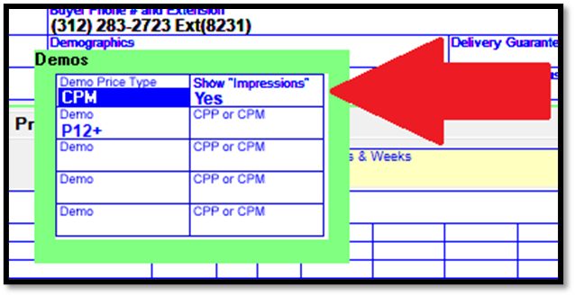
Setting “Show Impressions” to Yes on a contract has the following effects:
Proposals/Contracts report, Contract snapshot, and Insertion Orders: the word “impressions” appears in the Demos field of the header instead of the selected demo categories.
Proposals/Contracts report, Contract snapshot, and Insertion Orders: the column header “avg aud” appears as “download”, when the “research” option is checked on.
Contract report example below
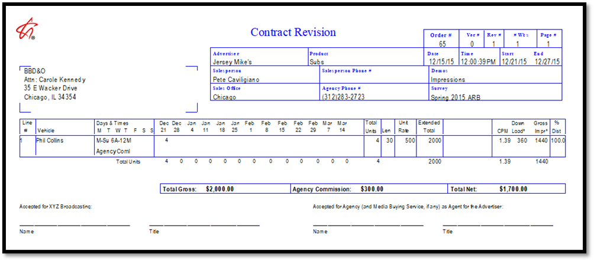
Insertion Orders example
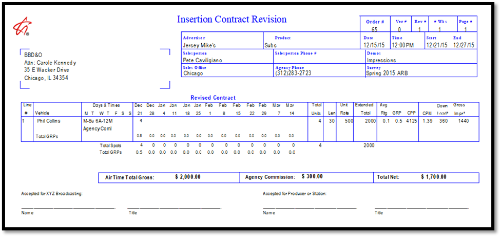
Log format L75: the letters “IMPR” appear after any spot from a contract set to “Show Impressions = Yes”.
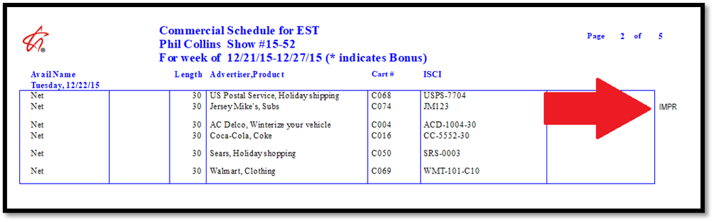
Spots screen: Any spots from a “Show Impressions = Yes” contract will have a yellow/orange background as shown on the Spots screen.
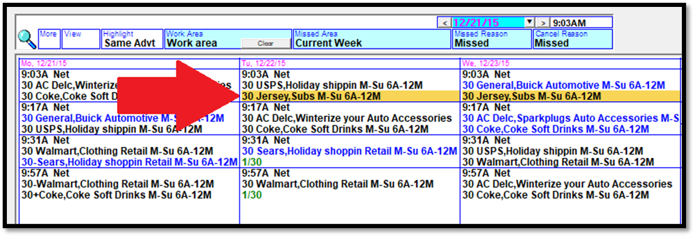
Billing Cycle
If the Calendar month billing cycle is enabled in Traffic Site Options, contracts with Digital lines only can use the Calendar billing cycle, which is set in the contract header area. If air time or podcast spots will be on a contract, then only the standard broadcast calendar billing cycle can be used. A warning message will appear when saving a contract if there’s air time or podcast spot lines on a contract set to the Calendar billing cycle.
Podcast Spots Tab
Podcast Spot buys are entered by spot count and by date on the Air/Pod Spots tab in the lower half of the screen, just like air time lines.
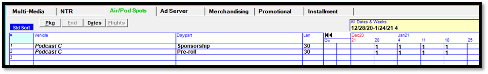
To enter a podcast spot buy, select the vehicle from the vehicle dropdown list, enter the daypart and spot length, then advance to the grid area to enter the number of spots for each week. (Overrides and daily buys can also be entered in the Override field.) To advance to the price field, press the letter P and press Tab, then enter the spot price (or use the Rate Card price).
Digital Tab
The Digital tab is used to enter lines for dynamically inserted ads. Digital lines do not have spots, but instead have a start and end date range that is defined for each line, with an impression goal and other values, explained below.
ID: each line item added to the Digital tab is given an ID number, starting at 1, as a way of identifying that line item for this contract.
Vehicle: the list of vehicles will include all vehicles set to the medium setting of Podcast/Ad Server, along with any previously defined CPM Standard Packages.
Ad Location: the ad location field is populated with the dayparts/ad locations defined for the selected vehicle.
Price Type: the price type field is a toggle that switches between “CPM” and “Flat Rate” when clicking it. With the CPM price type, the CPM for the line is defined in the CPM field, and is used to calculate the line cost when running invoices. For Flat Rate lines, the CPM field is skipped, and instead, a Flat Rate total cost must be entered in the Cost column. If a Flat Rate line runs across more than one month, the monthly cost will be calculated by dividing the total cost by the number of months. For example, if the line is a two month line, and the total Flat Rate cost is $2,000, the monthly cost on the invoice will be $1,000. With Flat Rate lines, the cost is set to a fixed value, regardless of the impressions delivered for the line, and while impressions can be tracked for Flat Rate lines, they have no effect on the monthly invoice cost for that line.
Position: the position field is used to set what position within an ad break to use for this line. Each Ad Server has their own set of position values, which are configured on the Vehicle Options screen. The position values shown in the dropdown will match the Ad Server defined for the selected vehicle.
Priority: the priority is how the Ad Server determines which line to prioritize when there are multiple lines competing for the same inventory. Each Ad Server has their own set of priority values, which are configured on the Vehicle Options screen. The priority values shown in the dropdown will match the Ad Server defined for the selected vehicle.
Ad Server Targeting: targeting information can be entered here. For a complete description of Ad Server targeting, see the following section.
Start Date and End Date: used to enter the start and end date of the line item (the dates the line item will be active in the Ad Server).
Impression Goal: the number of ordered impressions for this line. (Important note: impressions on the Ad Server tab are always in units, regardless of the Site Options audience setting that allows audience data to be stored in thousands, hundreds, tens, and units.)
Impression Cap: the impression cap value is used to limit the number of impressions that can be delivered for a line.
CPM: the cost per thousand. When defined on the Rate Card, the default CPM for the vehicle/ad location will be pre-populated, although it can be changed for the line by typing over it. For Flat Rate lines, the CPM field is skipped.
Cost: for CPM price type lines, the cost is automatically calculated using the impression goal and CPM (impression goal multiplied by CPM divided by 1000). If the cost is changed, the CPM is automatically recalculated. If the impression goal is changed, the cost is automatically recalculated. For Flat Rate lines, the cost must be entered manually.
Comment: a line comment can be entered here.
Totals: at the bottom of the Digital tab, the sum of the impression goals and sum of the total costs are shown under the corresponding columns. The overall Ad Server CPM is also shown, if all the Digital lines are using the CPM price type. If there are any flat rate price type lines, the Ad Server CPM total is not shown at the bottom of the Digital tab.
Ad Server Targeting
Vehicle and ad location targeting is handled by the vehicle and ad location field. To target specific targeting categories supported by the Ad Server, such as Tags, Geo-targeting, Device Targeting, etc., it must be configured in the Ad Server Targeting section. Ad Server targeting definitions in Counterpoint consist of a user-friendly targeting definition name, and the categories and items that make up that targeting definition. Targeting definitions are stored by advertiser, so a previously defined and saved targeting definition for a specific advertiser could be reused on another line, or on another contract for that same advertiser. To select a previously saved targeting definition, simply select it from the dropdown menu on the Ad Server Targeting field. To define a new targeting definition, select New from the dropdown and define the name, status, categories, and items on the Ad Server Targeting screen (shown below).
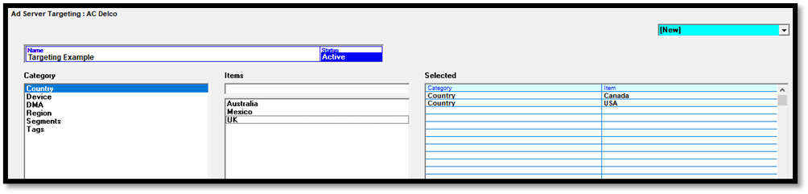
Name: the user friendly targeting definition name, which will be shown on the targeting section of the invoice.
Status: can be set to Active or Dormant. A Dormant definition is excluded from the list of active targeting definitions on the Ad Server Targeting dropdown on the Ad Server tab.
Category and Items: the list of previously defined categories appears in the category field. Select a category by clicking it. This will populate the Item list with the items that are associated with that category. To add an item to the targeting definition, click the item once, and it will move to the list of selected items on the right side of the screen. When the list of items is long, you can start to type an item name in the text entry box directly above the item list, and if there’s a matching item, it will be highlighted, as shown in the picture below.
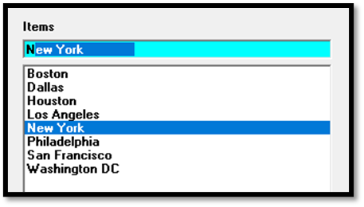
An item can be removed from the selected list simply by clicking it once. Only the items in the selected list will be included in the targeting definition. In the example below, this targeting definition will target the countries of Canada and the USA, and the Tag value of Sports.
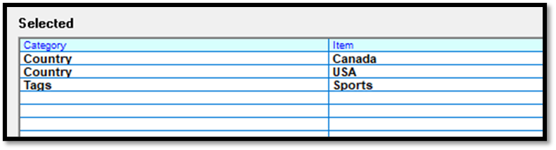
The Save button is used to save a targeting definition.
The Ad Server Items button at the bottom of the screen brings up the Ad Server Item list screen, which is used to view or modify Ad Server Categories or Items. Only users with view or update permission for this screen will be able to access it. See the Ad Server Item List screen section above for more information on this screen.
A saved targeting definition can be selected on any Ad Server line, as shown in the picture below.
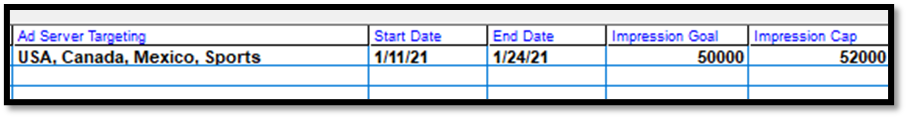
Digital Packages
Standard packages (standardized packages defined on the Rate Card screen) and dynamic packages (packages created on the fly as the Proposal or Order screen) can be created for CPM lines. A package consists of a package line, which is a virtual line that will be shown on the invoice, and one or more hidden lines, which are the individual vehicles/shows/podcasts that make up a package.
Hidden lines within a package are shown under the package line, with an indent next to the vehicle name, and in a light blue font color, while the package line is shown in a darker blue font color.
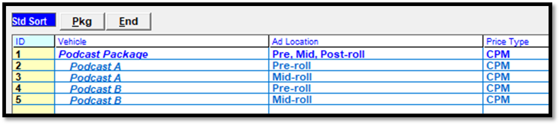
Standard Packages
Standard packages are defined on the Rate Card screen and are sorted to the top of the vehicle list on the Digital tab.
To add a CPM Standard Package to a contract:
- Select the package vehicle and ad location.
- The Price Type will be automatically set to CPM (Standard Packages are not compatible with the Flat Rate price type).
- Enter the position, priority, Ad Server Targeting, and start and end date. When the package is created, these values will be used for each hidden line
- In Impression Goal, enter the total number of impressions ordered for this package, then press Tab. At that point, the package will be expanded, and the hidden lines will be created. The package impression goal will be distributed to the hidden lines using the impression percentage defined in the standard package definition. The total cost of each hidden line will be calculated using the impression goal for that hidden line and the hidden line CPM (pulled from the Rate Card). The total package cost will be the sum of the hidden line costs, and the package CPM will be calculated from the total cost and total impression goal.
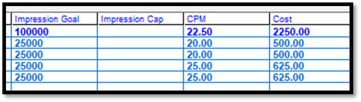
Once a CPM Standard Package has been added to a contract, the impression goal and cost can be changed and the values will recalculate.
Dynamic Packages
You can create dynamic packages on the Digital tab from CPM lines that have already been added.
To create a dynamic package from existing Digital lines:
- Press the PKG (package) button to bring up the package screen.
- Enter the package vehicle name (or select an existing one) from the Vehicle list.
- Select the Daypart/Ad Location to use for the package.
- Select the lines to add to the package, either by clicking them, or clicking the “all lines” checkbox. (Note: Flat Rate lines are automatically excluded from this screen.)
- Press Done on the Package screen to create the package.
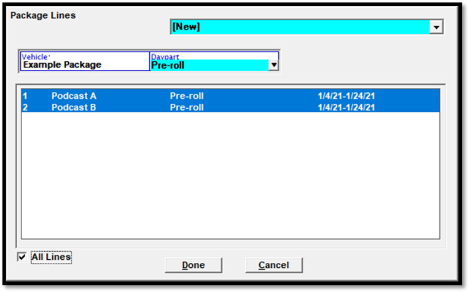
The picture below shows an example of a dynamic package that was created.
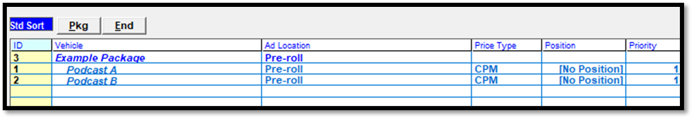
Hidden lines can be removed from a package on the Package screen. Simply bring up an existing package, un-highlight the line or lines you wish to remove from the package, then press Done.
You can also remove a package or a package and the hidden lines within the package by selecting the package line and pressing the trashcan icon in the lower right corner of the screen. A prompt will appear that asks whether to remove the package only or the package and the hidden lines.
Modifying Digital Lines
End Button
Digital lines can be terminated (canceled before start) or the end date can be moved to an earlier date using the End button. To cancel a line before it starts, click the line on the End screen, select the “canceled before start” option, then press Done. To set the end date to an earlier end date, click the line on the End screen, select the new end date, then press Done.
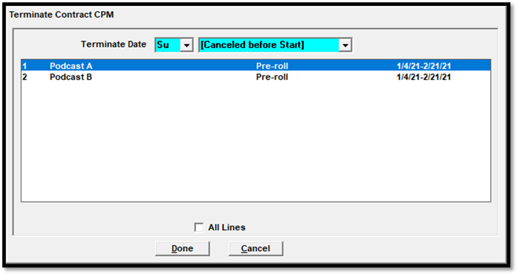
The start and end date can also be edited directly on the line grid, although the end date cannot be set to a date in the past/prior or equal to the last invoice date.
After Invoicing
Once a contract has been invoiced for at least one month, only the end date can be changed, and the other values will be shown in a green font color to indicate that the line has been invoiced (prior to invoicing a contract for the first time, any value can be changed, although there are some limits, for example, a hidden line cannot be set to the Flat Rate price type and packages always use the CPM price type).
A green font color is used to indicate invoiced Digital lines.
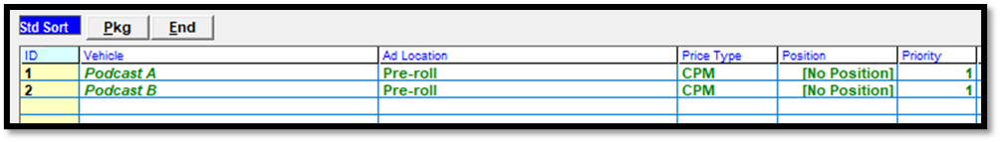
The end date can be changed on an invoiced line if it’s still in the future, but it cannot be set to a date in the past, and cannot be set to a date prior to or equal to the last invoice date. As shown in the picture below, the end date is using a black font color and can still be changed, either extended, or shortened, as long as the new date is not prior to the last invoice date.
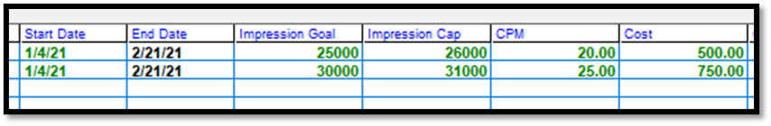
If the end date is changed to a date in the past, a warning message will appear when saving, and the save process will not be able to be completed until the end date is corrected.
If a contract line has achieved the impression goal and the line continues into future months, the end date can be changed so that it is no longer active for those future months.
Modifying Flat Rate Lines
If the cost of a Flat Rate line needs to be altered after invoicing, use the End button to terminate the line, then enter a new line using the new Flat Rate cost.
Proposal Screen Research Totals
When a Proposal contains Digital lines only (no Air Time or Podcast Spot lines), the overall Ad Server CPM is shown in the lower right corner of the screen, as shown in the picture below.

The Ad Server CPM shown at the bottom of the screen will include flat rate price type lines, if they exist. The Ad Server CPM is calculated using the following formula: Ad Server CPM = (1000 * total Ad Server cost / sum of Ad Server impression goal for each line).
When a Proposal contains both Air Time/Podcast Spot lines and Digital lines, in the lower right corner of the Proposal screen, the system will calculate the Total CPM for the entire contract, using the Air Time/Podcast Spot lines and Digital lines. It adds the total Air Time/Podcast Spot gross impressions to the sum of the Digital impression goals to get the total impressions, then calculates the CPM using the total air time plus podcast spot plus ad server cost.
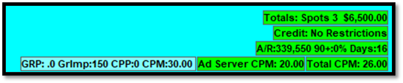
In the example above, the air time gross impressions was 150,000 (on this example, the air time impressions are stored in thousands), and the sum of the ad server impression goal was 100,000, for a total of 250,000. The total cost of the air time and ad server lines was $6,500. Therefore the total CPM is 26.00. (CPM = 1000 * 6,500 / 250,000)
Additional Podcast Contract Information
Saving
Contracts can be saved using the Save-Go or Save-Stay buttons. When a proposal is turned into an Order/Hold, it can be scheduled on the Schedule screen. Scheduling a contract is the process where spots are created in the Traffic system (for air time and podcast spot lines), and where Digital lines will be updated on the Ad Server, when a direct connection to the Ad Server is available.
Speed Bar and Other Buttons
The Speed Bar, Sellout, and Demo Bar are not used with the Digital tab, but can be used with podcast lines on the Air/Pod Spots tab.
Viewing Contracts
Contracts can be viewed using the View action, although the comparison mode that allows one contract revision to be compared to another one is not applicable to the Digital tab.
Proposal XML
The Proposal XML export can be generated from the Proposal screen, although only lines from the Air/Pod Spots tab are included. Digital lines are excluded from the Proposal XML export.